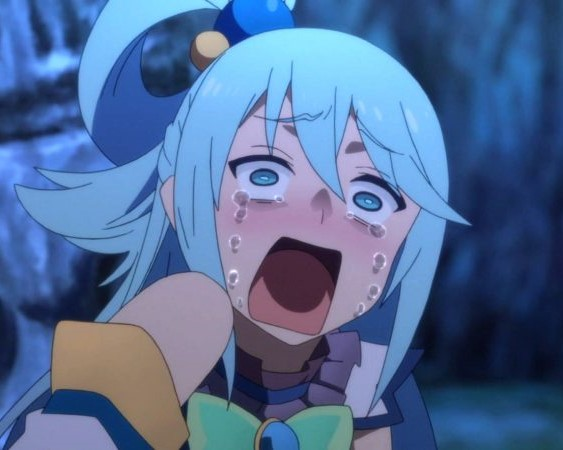

Sejarah

Kota ini tercatat dalam berbagai sejarah penting yang pernah
terjadi di Indonesia, salah satunya sebagai tempat berdirinya
sebuah perguruan tinggi teknik pertama di Indonesia (Technische
Hoogeschool te Bandoeng–TH Bandung, sekarang Institut Teknologi
Bandung–ITB), lokasi ajang pertempuran pada masa kemerdekaan,
serta pernah menjadi tempat berlangsungnya Konferensi Asia-Afrika
1955, suatu pertemuan yang menyuarakan semangat anti kolonialisme,
bahkan Perdana Menteri India Jawaharlal Nehru dalam pidatonya
mengatakan bahwa Bandung adalah ibu kotanya Asia-Afrika.
Geografis

Kota Bandung dikelilingi oleh pegunungan, sehingga bentuk
morfologi wilayahnya bagaikan sebuah mangkuk raksasa,[11] secara
geografis kota ini terletak di tengah-tengah provinsi Jawa Barat,
serta berada pada ketinggian ±768 m di atas permukaan laut,[12]
dengan titik tertinggi di berada di sebelah utara dengan
ketinggian 1.050 meter [12] di atas permukaan laut dan sebelah
selatan merupakan kawasan rendah dengan ketinggian 675 meter di
atas permukaan laut.[12]
Kota Bandung dialiri dua sungai utama, yaitu Sungai Cikapundung
dan Sungai Citarum beserta anak-anak sungainya yang pada umumnya
mengalir ke arah selatan dan bertemu di Sungai Citarum. Dengan
kondisi yang demikian, Bandung Selatan sangat rentan terhadap
masalah banjir terutama pada musim hujan.
Wisata
Sejak dibukanya Jalan Tol Cipularang, kota Bandung telah menjadi
tujuan utama dalam menikmati liburan akhir pekan terutama dari
masyarakat yang berasal dari Jakarta sekitarnya. Selain menjadi
kota wisata belanja, kota Bandung juga dikenal dengan sejumlah
besar bangunan lama berarsitektur peninggalan Belanda.
Wisata 1

Terletak di Cikole, Lembang, Kabupaten Bandung Barat, Jawa
Barat, adalah hutan anggrek terbesar di Indonesia. Enggak
main-main, jumlah anggrek di sini mencapai 20.000 tanaman!
Selain anggrek, barisan pohon pinus yang ada di sana juga
membuat pemandangan Orchid Forest Cikole menjadi sangat indah.
Selain menawarkan pemandangan hutan pinus dan anggrek, Orchid
Forest Cikole juga memiliki tempat bermain golf, area bermain
dengan kelinci, jembatan tali yang bersinar di malam hari,
sampai horse ranch.
Farm House Lembang
Berada di jalur utama Bandung-Lembang, Farm House menjadi objek
wisata yang tidak pernah sepi pengunjung. Selain karena letaknya
strategis, kawasan ini juga menghadirkan nuansa wisata khas
Eropa. Semua itu diterapkan dalam bentuk spot swafoto
Instagramable.